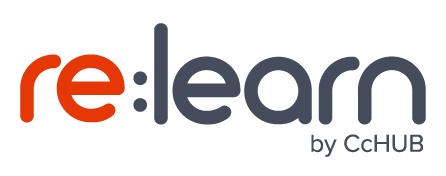

About re:learn
At re:learn, our goal is to help schools use technology in a smart way to enhance learning. Through content curation and capacity development - with a wide network of trained facilitators, our aim is to improve the learning experience in and out of the classroom.
The re:learn Centre located in Abuja is a home of experimentation as we identify innovative ways to equip teachers and students with 21st century tools to accelerate the delivery of content and ultimately students’ learning.
Activities
Summer of Code
Let's teach your kids Computer Science and programming, in a fun and interactive way, this Summer; as they learn to design their own games, animations, web pages and computer applications. Sign up your 5 - 18 year olds for an awesome summer in any of these locations: Lagos, Abuja, Ilorin, Ibadan & Owerri
Duration: 4 Weeks
Date: 30th July - 25th August (Mondays, Wednesdays, and Fridays)
TIME: 10:00AM - 2:00PM
Gap your club
Specially designed for teens who have completed secondary school and have few months before starting at a university. Choose one of 2 tracks and kickstart their careers and maximise the time they have before undergraduate life begins.
Duration: 5 weeks
Date: 14th May - 23rd June (Mon, Wed & Fri)
TIME: 10:00AM - 2:00PM
Code Squad
Has your child finished the JSS3 exams with a few months before secondary school begins? Maximize their time with The Code Squad! The programme introduces kids to programming, helping them build their computational thinking skills and unlock their digital creativity! HERE
Duration: 5 weeks
Date: 21st May - 23rd June
TIME: 10:00AM - 2:00PM (MONDAYS, WEDNESDAYS AND FRIDAYS)